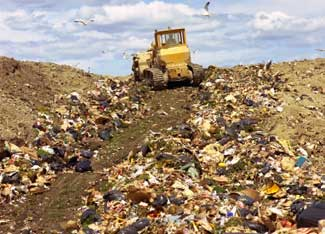

According to the latest solid waste survey conducted by the U.S. Environmental Protection Agency (EPA), Americans are recycling more than ever before. In 1970, less than 7 percent of household waste was recycled; by 1990, that rate had climbed to just 16 percent. In 2007, though, U.S. residents recycled 85 million tons, or 33 percent, of the nation’s household municipal waste.
Among the most common items kept out of landfills are various forms of food and beverage packaging. Topping that list, nearly half of all aluminum cans are recovered. In fact, according to Earth 911, a recycling database and advocacy website, more than 113,000 aluminum cans are recycled every minute.
But, while more goods are being recycled, the value of the raw materials has crashed in the past several months. According to Earth 911, cardboard sold for about $135 per ton in September, but dropped to $35 in the following months. Mixed paper went from $105 per ton in October to $25 in March. In late 2008, the value of aluminum cans plunged from almost $1,600 per ton to $800.
Even before these prices dropped, some worried that the waste hauler or city government might trash those valuable materials if the landfill was a more cost-effective option. These concerns are only heightened when people who make an effort to recycle hear news reports about recycling warehouses stacked with unsold cardboard or local governments cutting back their waste-reduction programs - such as in a recent article in the Los Angeles Times.
The newspaper reported that as a result of the global economic recession, some of the bottles and cans citizens set aside for recycling were instead being dumped in the landfill. Apparently, the Los Angeles County Sanitation District had to slash labor hours at its material recovery facility - the warehouse where recyclables are sorted, processed and baled. In the past several months, the prices for recovered paper, metal and plastic had declined so precipitously that the value of the commodities recovered from Los Angeles’ waste stream wasn’t enough to cover the operation’s full-time expenses. With reduced manpower to sort the cans and bottles, thousands of pounds of recyclables started heading to the landfill.
However, it seems that this situation in Los Angeles county is an exception. Even in this tough economic climate, several experts say we shouldn’t fear our recyclables are going to waste, as there’s little incentive for waste haulers to simply bury recyclables in a landfill. Aluminum, in particular, is a useful commodity even when the economy is lagging.
“It takes 95 percent less energy to make a new aluminum can out of recycled aluminum than from virgin aluminum,” says Jennifer Berry, Earth911 manager of public and strategic relations. “So the profitability of using reclaimed material is so far superior that it’s just inherently valuable.”
That reclaimed material also has chemistry on its side, says Brian Taylor, editor in chief of Recycling Today, a national trade magazine. Aluminum can be molded into a can, recycled by a customer and reprocessed over and over again without a loss of product quality. It’s a quick turnaround, too. An empty 7-Up can is reprocessed and back on the grocery store shelves in as little as two months.
While the majority of recycled paper and cardboard products have to be shipped to the manufacturing sector in China, Taylor says, a large percentage of aluminum cans re-circulate in North America.
“Soda and beer are a little more recession proof,” he says. “People are drinking just as much Coke and Budweiser as they were a year ago.”
Taylor isn’t naïve, though. He acknowledges that, in recent months, there have surely been isolated cases in which waste management companies dumped aluminum cans and other recyclables into the landfill to save themselves the trouble of dealing with a sluggish market.
According to Tisha Petteway, the EPA’s national spokesperson on solid waste issues, the federal government can’t ensure that trash haulers always keep their word.
“It’s hard for us to regulate that, which is why it’s more or less a local issue,” she says.
Luckily, the deck is stacked in the consumer’s favor. Waste management companies typically are legally bound to meet their recycling commitments.
“Municipal contracts are carefully written now so a company that collects newspapers and bottles and cans for recycling is taking a pretty big risk by sending them to the landfill,” Taylor says.
Perhaps more importantly, burying recyclables is like burning cash. Whether it’s more than $200 or less than a single dollar, paper, plastic and aluminum are still worth something. “Once it goes to a landfill, the value has been completely lost,” Berry says. It also takes up expensive space, ultimately increasing the significant costs of maintaining and expanding a landfill.
Take it from Tom Coffman, a spokesperson for Deffenbaugh Industries, one of the largest waste haulers in the Midwest. He doesn’t mince words about the economic downturn and decline in commodity prices. “It’s been God awful,” he says with a rueful laugh. But Coffman says the company has been in the recycling business for nearly two decades. They’ve built relationships with vendors and they’re not about to break their consumer trust - and city contract - by needlessly filling their $600,000 landfill with items that were meant for recycling.
For those concerned about whether their recyclable materials are actually being recycled, the best advice is simply to play by the rules, says Ed Skernolis, executive director of the National Recycling Coalition, a nonprofit group based in Washington, D.C.
“The first thing is to be a conscientious recycler,” he says. “Know what you can mix together and what you need to remove. If you know all the little rules it makes it easier for the community to recycle.”
|
 ISTOCKPHOTO Waste management companies have more waste to process and fewer workers to handle the load, at the same time that the monetary return for raw materials is plummeting - and some people are concerned that all this means their recyclables might be headed to the landfill. |
|
|